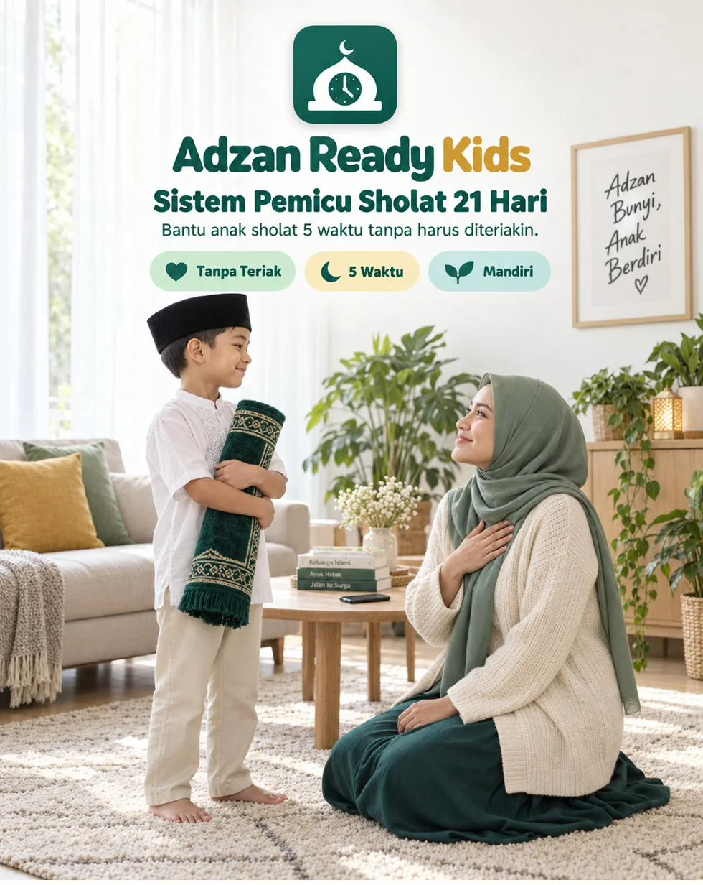
Sekarang caranya bukan lagi tips yang kamu baca lalu lupa. Adzan Ready Kids adalah aplikasi yang memasang sistem pemicu sholat di rumahmu, lalu nemenin kamu menjalankannya hari demi hari selama 21 hari.
Sekali bayar. Akses selamanya. Buka dari HP atau laptop, tanpa install.
“Bentar lagi, Maaa.”
Adzan Maghrib sudah lewat sepuluh menit. Dia masih di sofa, mata ke layar. Kamu ngomong kedua kali, ketiga kali, dan di kali keempat suaramu sudah naik. Dia akhirnya berdiri, sambil cemberut. Kamu tahu sholatnya cuma supaya kamu diam.
“Lima menit lagi...”
Jam 04.40. Kamu bangunin pelan, dia gak gerak. Lampu dinyalain, dia narik selimut. Ujungnya dia nangis, kamu ngomel, dan pagi itu dimulai dengan dua orang yang sama-sama kesal. Besok terulang lagi.
“Udah kok, Ma.”
Sajadahnya masih terlipat rapi. Kamu tahu dia bohong. Yang bikin sesak bukan bohongnya, tapi satu pikiran yang terus muncul: kalau aku berhenti ngingetin, jangan-jangan dia berhenti sholat.
Tiga adegan ini kelihatan beda. Akarnya satu. Dan bukan karena kamu kurang tegas, atau anakmu kurang iman.
Selama ini tugas mengingatkan cuma ada di satu tempat: mulutmu. Setiap adzan, kamu yang jadi alarm. Dan alarm yang bunyi terlalu sering, lama-lama dimatikan.
"Nanti" bukan tanda anakmu menolak sholat. Itu tanda dia sudah hafal polanya: disuruh, menunda, dimarahi, baru jalan. Selama polanya sama, jawabannya juga akan sama.
Perintah menyuruh anak sholat sejak usia 7 bisa dijalankan dengan dua cara. Lewat omelan yang diulang lima kali sehari, atau lewat kebiasaan di rumah yang bikin sholat jadi hal yang otomatis.
Adzan Ready Kids memindahkan tugas itu pelan-pelan, dari suaramu ke 5 pemicu di rumah.
Adzan bunyi, seisi rumah berhenti 5 menit. Orang dewasa juga.
Layar ditaruh di satu titik saat adzan. Berlaku untuk ayah dan bunda juga.
Satu sholat berjamaah wajib di rumah setiap hari, jadi patokan hari itu.
Bangun pagi yang tenang dimulai dari jam tidur malam sebelumnya.
Anak melihat kemajuannya sendiri, dan kolom yang paling dia kejar: tanpa disuruh.
Berhenti nyuruh. Mulai pasang pemicu.
Tanpa bentakan, tanpa hukuman fisik.
Nama panggilan dan usia anak (sampai 4 anak), lokasi rumah, jam tidur, siapa imam Maghrib, dan suara adzan yang mau diputar. Jadwal sholat dihitung langsung di HP dengan standar Kemenag. Sholat yang biasa dikerjakan di sekolah otomatis ditandai, jadi gak dihitung bolong.
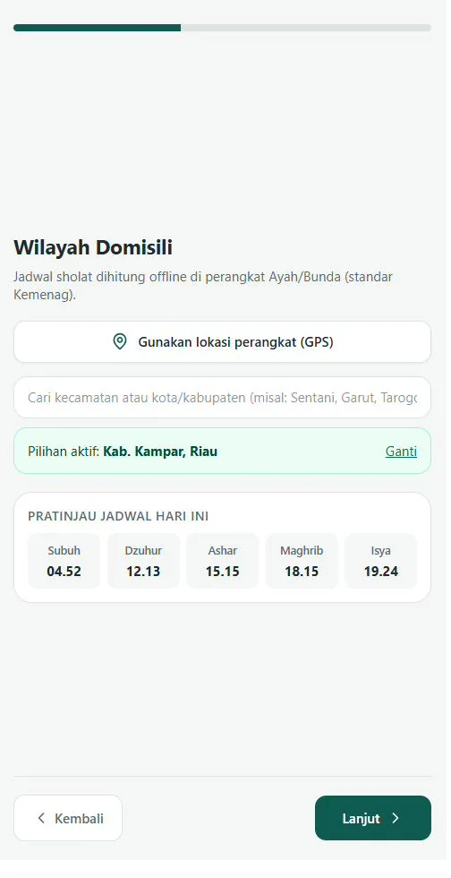
Belum ada yang perlu diubah. Tiap waktu sholat, jawab tiga pertanyaan singkat: bagaimana anak saat adzan masuk, dia sedang apa, dan kalimat apa yang tadi keluar dari mulutmu. Dari catatan jujur ini, aplikasi menyusun urutan pemicu yang paling pas untuk rumahmu.
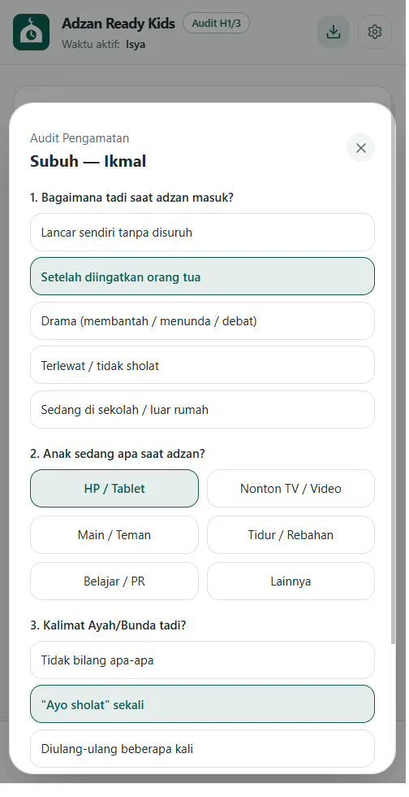
Sholat berikutnya dan hitung mundurnya selalu ada di layar pertama. Adzan masuk, buka Layar Adzan Rumah, lalu catat dengan satu tap: Mandiri atau Diingatkan.
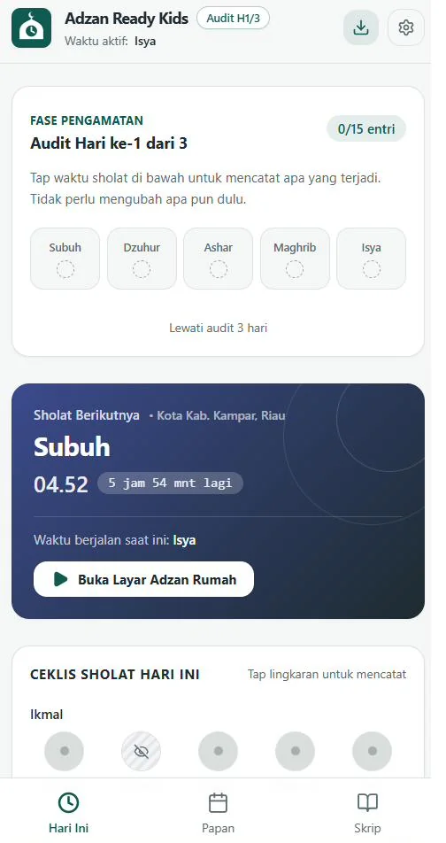
Inti program
Begitu waktu sholat masuk, Layar Adzan Rumah memutar adzan dan menjalankan hitung mundur Rumah Berhenti 5 Menit. Semua orang, termasuk orang dewasa, parkir layar dan bersiap wudhu.
Suara adzannya bisa nada lembut bawaan, atau rekaman adzan favorit dari HP-mu sendiri. Layarnya juga bisa diatur terbuka otomatis saat waktu sholat masuk.
Di bawahnya ada satu kalimat yang boleh kamu ucapkan minggu ini. Cuma satu. Setelah itu, rumahnya yang bicara.
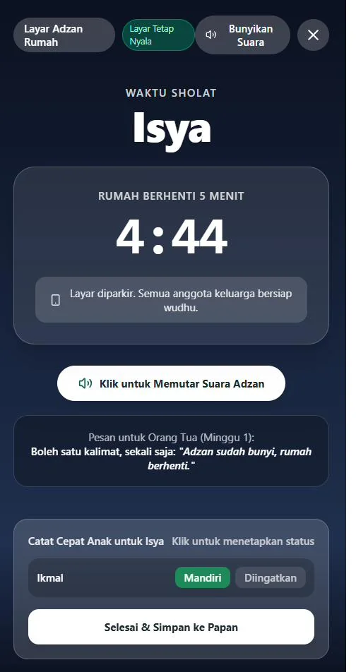
Saat anak menolak
Ada enam situasi yang paling sering terjadi: bilang "nanti", gak mau lepas HP, susah bangun Subuh, ngaku sudah sholat, ngajak debat, serta nangis atau ngamuk.
Pilih satu, dan kamu langsung dapat 3 langkah berisi kalimat siap ucap yang sudah menyebut nama anakmu, plus satu hal yang sebaiknya dihindari saat itu.
Pegangannya sederhana: tarik napas dulu. Kamu gak harus menang hari ini. Satu kalimat tenang lalu diam jauh lebih kuat daripada perintah yang diulang-ulang.
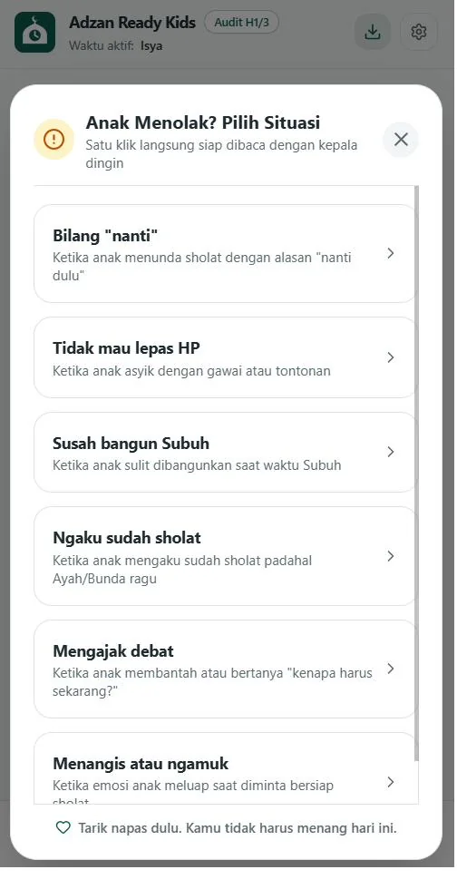
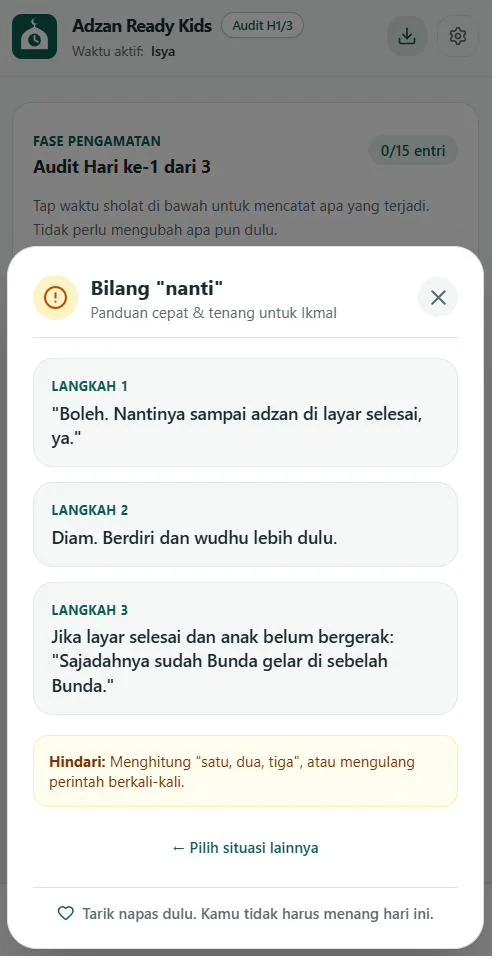
Geser untuk melihat langkah berikutnya.
Khusus Subuh
Protokol Subuh berisi lima langkah terpandu dengan timer. Dimulai dari kamu yang bangun dan wudhu duluan, lalu membangunkan anak bertahap tanpa teriak.
Jam bangun dan jam tidur bisa diatur per anak, karena Subuh yang tenang dimulai dari tidur malam sebelumnya.
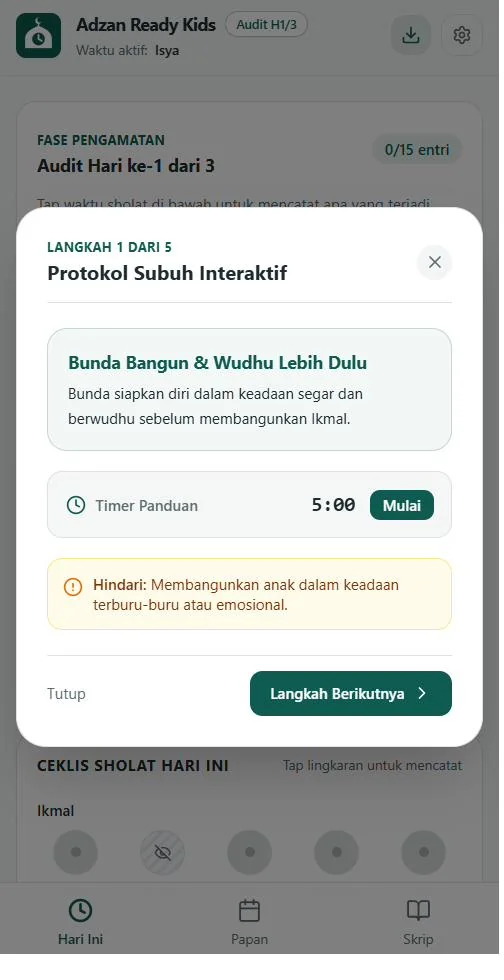
Untuk anak
Mode Anak adalah layar khusus dengan dua tombol besar: "Aku Sholat Sendiri" dan "Aku Sholat Setelah Diingatkan". Anak melapor sendiri, dan pelan-pelan sholat jadi urusannya, bukan urusanmu.
Untuk keluar dari Mode Anak, tombolnya harus ditahan 3 detik. Kamu juga bisa pasang PIN 4 digit supaya pengaturan gak diutak-atik.
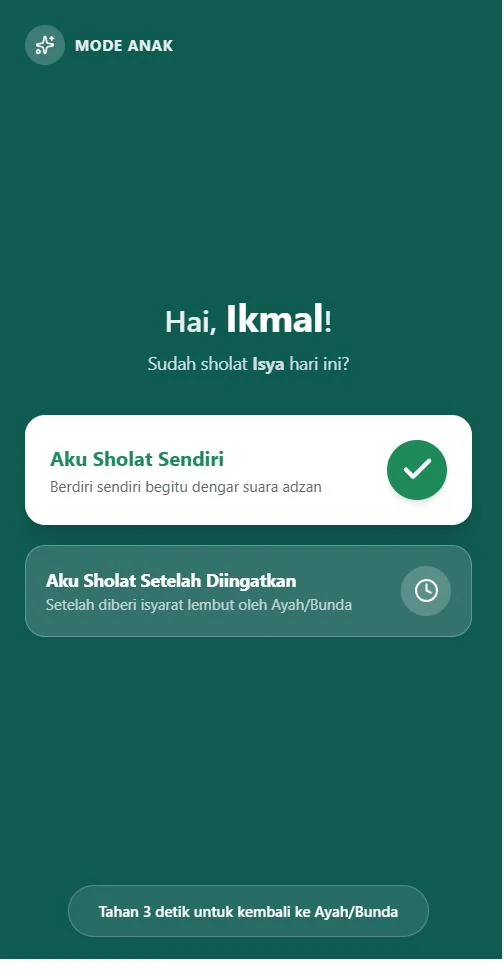
Pantau kemajuan
Papan 21 Hari menunjukkan persentase sholat Tanpa Disuruh, Setelah Diingatkan, dan Terlewat, lengkap per minggu. Versi cetak A4-nya bisa ditempel di dinding supaya anak ikut melihat kemajuannya sendiri.
Tiap minggu ada Evaluasi Mingguan per waktu sholat, ditutup Refleksi Orang Tua: tiga pertanyaan singkat tentang apa yang berubah di rumah.
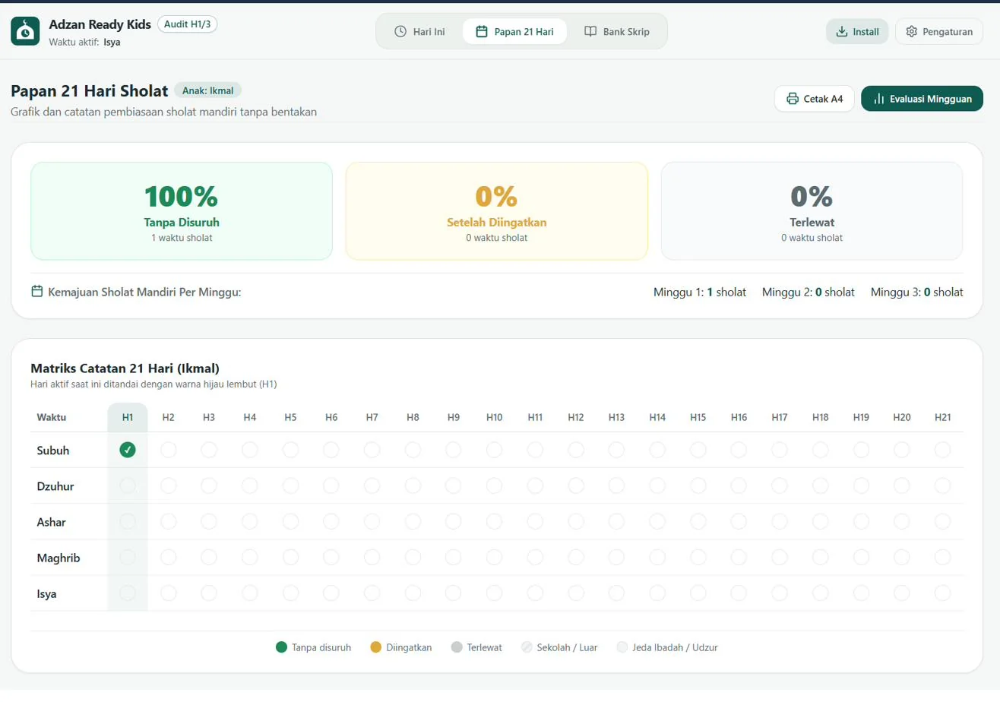
Ketuk gambar untuk memperbesar.
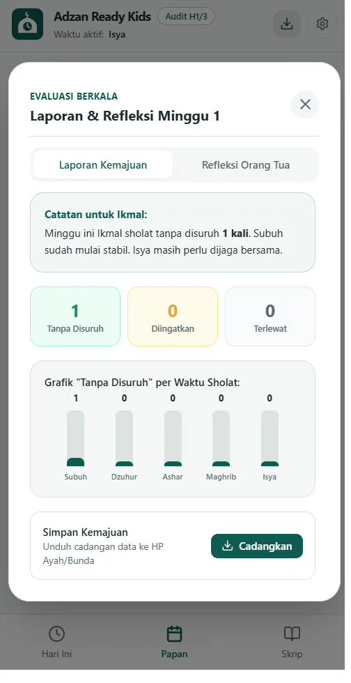
Bank Skrip
Bank Pujian Spesifik. Pujian yang menyebut nama anak, dikelompokkan per waktu sholat, khusus usia 10 sampai 12, dan untuk hari-hari sulit. Tinggal tekan Salin.
Kartu Saku. 12 kartu kalimat siap cetak dalam satu lembar A4. Gunting, lalu taruh di saku, di kulkas, atau dekat tempat sholat.
Doa Orang Tua. Doa dari Al-Qur'an lengkap dengan teks Arab, latin, arti, dan waktu yang dianjurkan untuk membacanya.
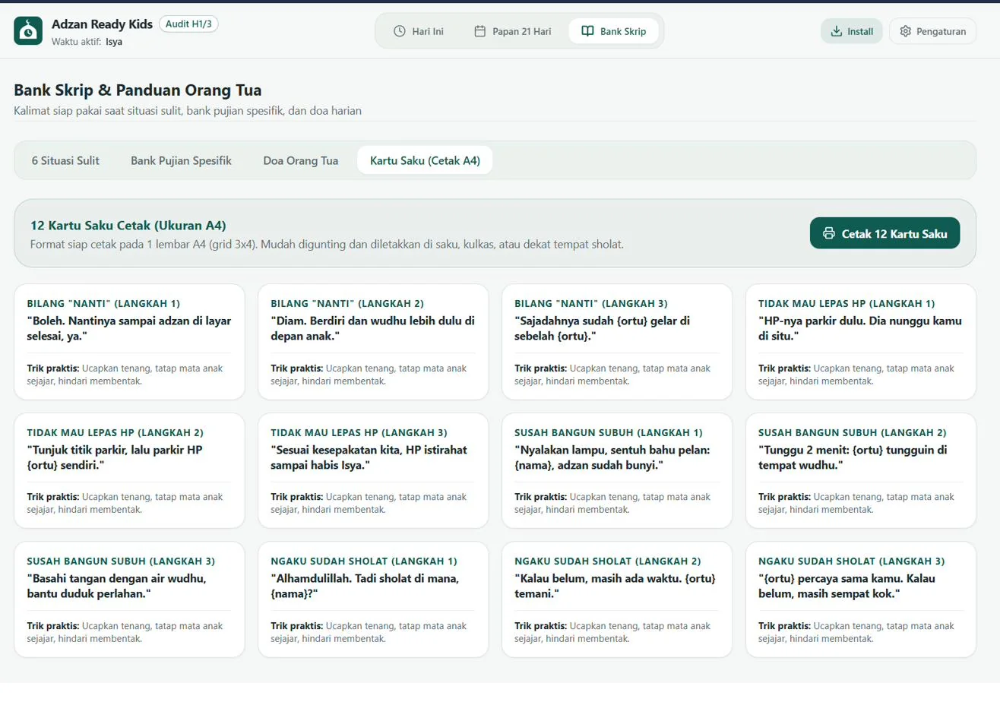
Ketuk gambar untuk memperbesar.
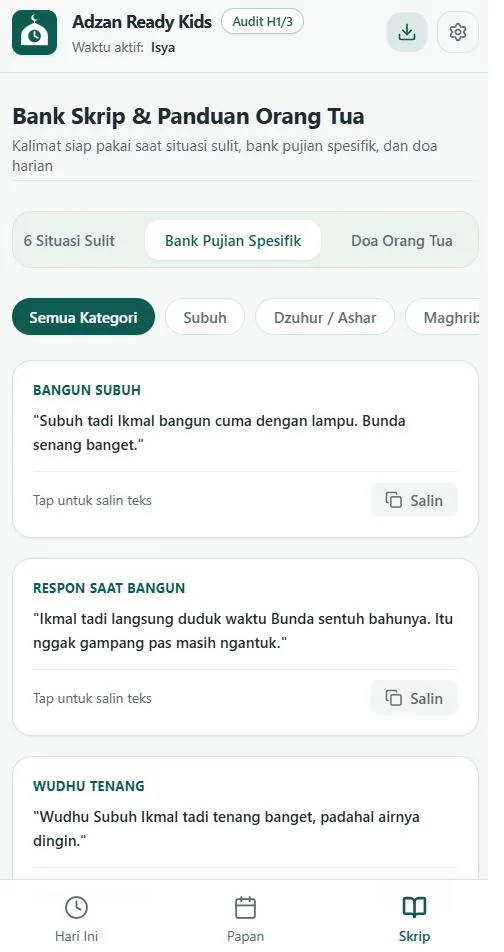
Saat rutinitas berubah
Aktifkan Mode Jeda, dan hari program berhenti sementara.
Kalau satu hari bolong, kamu gak perlu mengulang dari nol. Yang dihitung adalah kebiasaan jangka panjang, bukan sempurna setiap hari.
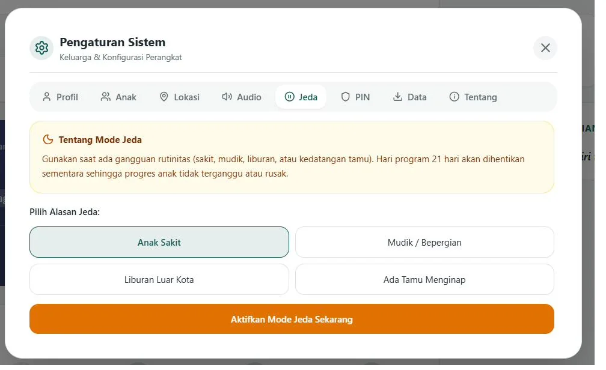
Ketuk gambar untuk memperbesar.
"Adzan sudah bunyi, rumah berhenti." Selebihnya, layar yang bekerja.
Adzan dan HP yang diparkir jadi isyaratnya. Kamu ikut berhenti dan bersiap wudhu.
Kamu gak memberi isyarat apa pun. Cukup catat, lalu beri pujian spesifik saat dia berdiri sendiri.
Tujuannya satu: tugas mengingatkan pindah dari suaramu ke kebiasaan di rumah.
Ritme tiap anak beda. Yang menentukan bukan seberapa keras kamu mengingatkan, tapi seberapa konsisten rumahmu berhenti saat adzan.
Nama anak, catatan sholat, dan rekaman adzan hanya tersimpan di browser perangkatmu. Tidak dikirim ke server luar, tidak ada iklan, dan tidak ada pelacakan pihak ketiga.
Mau pindah HP? Unduh file cadangan, lalu pulihkan di HP baru.
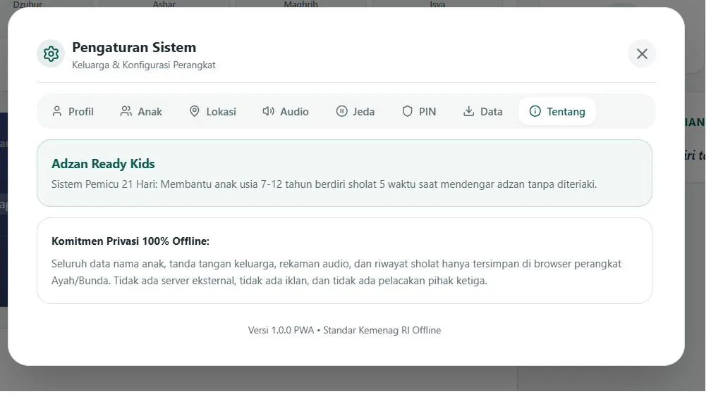
Ketuk gambar untuk memperbesar.
| Ebook / buku parenting | Kelas online | Adzan Ready Kids | |
|---|---|---|---|
| Saat adzan bunyi | Kamu yang harus ingat dan mengingatkan | Kamu yang harus ingat | Layar Adzan Rumah bunyi dan hitung mundur |
| Saat anak bilang "nanti" | Cari halamannya dulu | Tanya di grup | Satu tombol, 3 kalimat siap ucap |
| Jam 04.30 pagi | Baca ulang teorinya | Gak bisa diakses | Protokol Subuh bertimer |
| Jadwal sholat daerahmu | Tidak ada | Tidak ada | Otomatis, standar Kemenag |
| Memantau kemajuan | Pakai ingatan | Pakai ingatan | Papan 21 Hari dan evaluasi mingguan |
| Anak ikut terlibat | Tidak | Tidak | Mode Anak, lapor sendiri |
| Saat mudik atau sakit | Mulai lagi dari awal | Tidak dibahas | Mode Jeda |
| Menyebut nama anakmu | Tidak | Tidak | Otomatis |
Geser untuk melihat cerita lainnya. Nomor disensor untuk menjaga privasi.
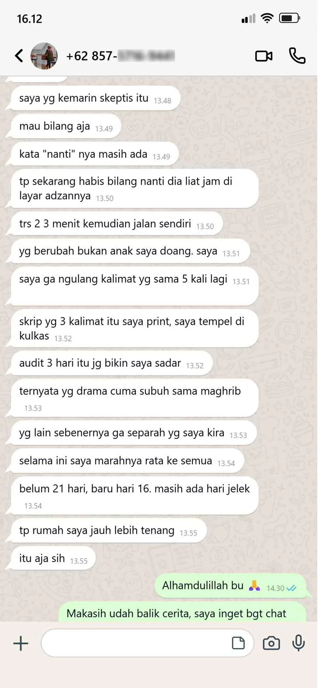
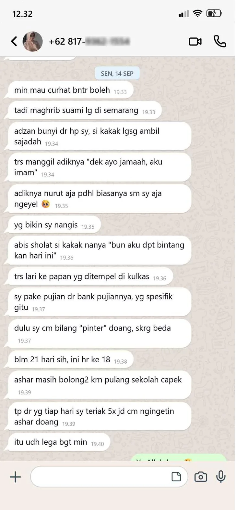
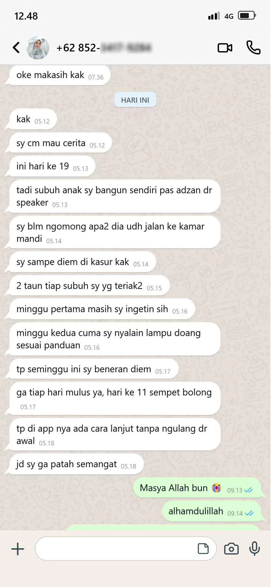
Rp127.000 untuk 105 adzan.21 hari dikali 5 waktu sholat. Hitungannya sekitar Rp1.200 per adzan yang gak perlu kamu teriakin lagi. Aplikasinya mungkin dia lupakan, tapi kebiasaan berdiri saat adzan dia bawa sampai dewasa.
Panduan dan kode akses dikirim ke email yang kamu pakai saat order.
Rp127.000 adalah harga perkenalan batch awal. Harga akan naik seiring penambahan fitur.
Bisa pakai QRIS, transfer bank, atau e-wallet.
Panduan dan kode akses dikirim otomatis begitu pembayaran terkonfirmasi. Kalau belum muncul di kotak masuk, cek folder Spam atau Promosi.
Buka aplikasinya lewat link di email, ketik kode akses, isi data keluarga, dan hari pertama langsung jalan.
Tanpa bikin akun, tanpa password.
Kamu sudah coba ngingetin baik-baik. Sudah coba tegas. Sudah coba cabut HP. Tiga hari kemudian, semuanya balik lagi seperti semula.
Bukan karena kamu kurang berusaha. Karena selama ini yang bekerja cuma suaramu, dan satu suara gak bisa jadi alarm lima kali sehari selamanya.
Adzan berikutnya tinggal beberapa jam lagi.
Sekali bayar. Akses selamanya. Buka dari HP atau laptop, tanpa install.